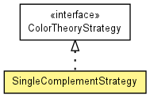

toxi.color.theory
Class SingleComplementStrategy
java.lang.Object
 toxi.color.theory.SingleComplementStrategy
toxi.color.theory.SingleComplementStrategy
- All Implemented Interfaces:
- ColorTheoryStrategy
public class SingleComplementStrategy
- extends java.lang.Object
- implements ColorTheoryStrategy

Implements the single complementary color scheme to create a compatible color for the
given one.
|
Field Summary |
static java.lang.String |
NAME
|
| Methods inherited from class java.lang.Object |
equals, getClass, hashCode, notify, notifyAll, wait, wait, wait |
NAME
public static final java.lang.String NAME
- See Also:
- Constant Field Values
SingleComplementStrategy
public SingleComplementStrategy()
createListFromColor
public ColorList createListFromColor(ReadonlyTColor src)
- Description copied from interface:
ColorTheoryStrategy
- Creates a new
ColorList of colors for the supplied source color
based on the strategy. The number of colors returned is unspecified and
depends on the strategy.
- Specified by:
createListFromColor in interface ColorTheoryStrategy
- Parameters:
src - source color
- Returns:
- list of matching colors created by the strategy.
getName
public java.lang.String getName()
- Description copied from interface:
ColorTheoryStrategy
- Returns the unique name of the strategy.
- Specified by:
getName in interface ColorTheoryStrategy
- Returns:
- name
toString
public java.lang.String toString()
- Overrides:
toString in class java.lang.Object